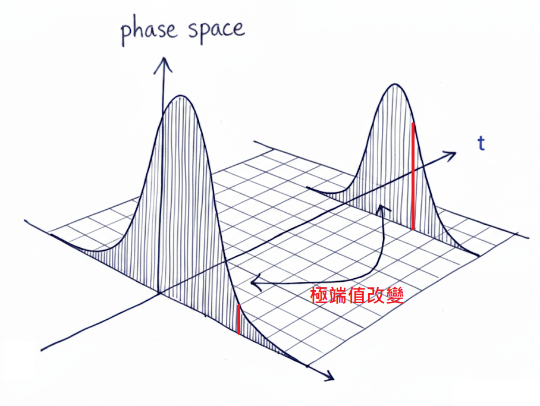
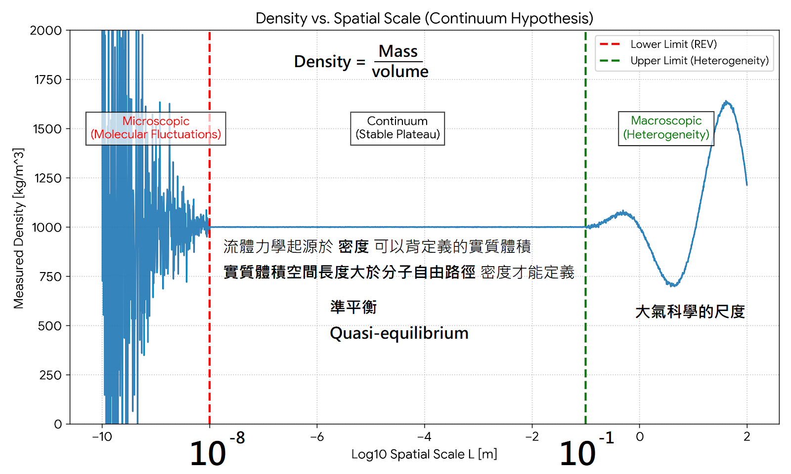
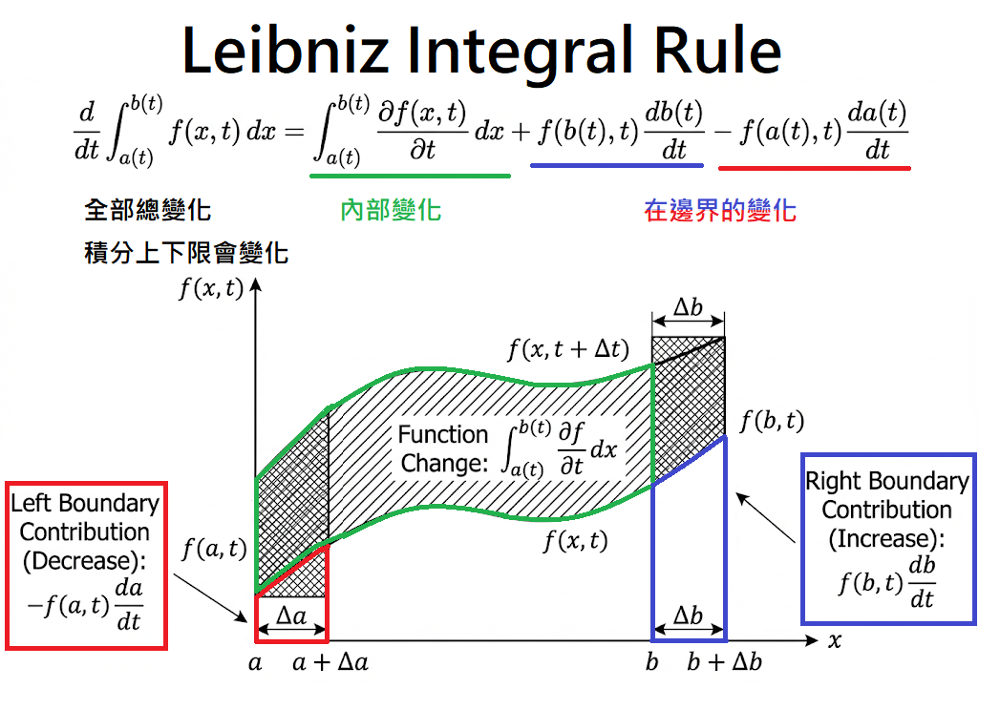
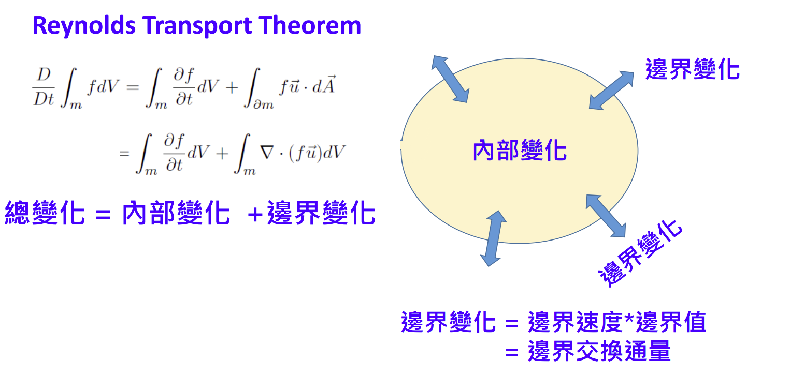

Advanced Atmospheric Dynamics - Week 1#
日期: 2026.02.23
1. 科學思想的演進 (17~18世紀迄今)#
1.1 觀察與實驗科學#
Empirical (經驗主義): 以牛頓為代表，極度注重觀測細節。如同繪畫中對花卉根莖、葡萄光影、蟋蟀節肢觸鬚的細膩描繪，科學奠基於對自然現象的精確觀察。
Experimental (實驗主義): 透過人為控制的實驗環境來驗證假說。
1.2 數學與運算方法的演進#
偏微分方程式 (PDE) & 變分學 (Calculus of Variations):
核心精神在於「尋找規律」與「最佳化」。例如尋找某個泛函 \(H(x)=y\) 的極值。
類比 AI 訓練: 這就像機器學習中的損失函數最小化過程 \(\min |H_i(x)-y|^2\)（Least Squares 精神）。
氣象應用實例: 對於衛星資料的資料同化（Data Assimilation），我們不是去最小化模式溫度與真實溫度的差異而是最小化 向外長波輻射（OLR）的觀測差 ，因為衛星直接觀測到的是輻射而非溫度 「對 OLR 校驗而非對 T 校驗」，這需要深厚的領域專業（Domain Knowledge）來定義正確的 Cost Function。
劉維方程式 (Liouville Equation):
描述系統在相空間（Phase Space）中機率密度分布隨時間演化的 PDE。
大氣科學的挑戰與機會: 過去因為氣候模式運算昂貴，只能做少數幾次系集預報（Ensemble forecast），這在統計上嚴重 Undersample（抽樣不足），導致對未來氣候變異 \(\sigma_{\text{future}}\) 的估計產生偏差。
現在受惠於 AI 算力（速度提升 \(10^5\) 倍以上），我們可以大量生成樣本更精確地捕捉天氣系統的 機率分布 ，而非僅僅預測單一軌跡。

1.3 領域分類演進#
Theoretical Sciences (理論科學): 涉及發展數學模型、抽象與假設，解釋背後機制。
動力學探討時間演化的過程。大氣科學擁有全球最完整、時間最長（至少40年）、空間涵蓋最廣的 4D 觀測資料，非常適合套用動力學與理論統計模型。（相比之下，海洋資料時間跨度較短，地質科學的時間解析度極度粗糙）。
發展史脈絡: 牛頓物理 \(\rightarrow\) 流體力學 \(\rightarrow\) 熱力學 \(\rightarrow\) 電磁學 \(\rightarrow\) 量子力學。
氣象學主要立基於流體與熱力學，但電磁學也極大推進了氣象發展（如電報傳輸天氣圖、雷達與探空儀）。
💡 課堂笑話: 熱力學第二定律告訴我們熵增原理，能量傳遞具有方向性。這就像金錢雖然守恆，但不代表錢會自動流向你。你去 7-11 買東西，不能伸手去收銀機把錢拿出來再買，因為這樣你會去牢裡「吃免錢飯」（不可逆過程）。
Computational Sciences (1950s 起): 大氣科學透過數值模式（Numerical Modeling）與數值實驗，轉變為可操作的實驗科學。
AI Data-Driven Era (2020s 起): NVIDIA 執行長黃仁勳提出的現代科學三大支柱：觀測 (Observations) + 數值模擬 (Numerical Simulations) + AI 算力 (AI Computing Power)。
2. 流體力學基礎 (18世紀)#
在流體力學中我們不可能追蹤每一個空氣分子（會遇到維數災難），因此必須引入連續體假設（Continuum Assumption）。
2.1 物理觀念：氣塊（Air Parcel）#
定義: 在流體中取一個包含大量分子、但在巨觀下可視為一點的微小體積。
特性:
Arbitrary (任意性): 可任意劃定其初始邊界。
Material Volume (物質體積): 邊界隨著流體一起移動，確保流進與流出該氣塊的質量永遠守恆。
類比 OOP: 就像在 Python 中實例化一個
AirParcel物件，這個物件的質量屬性被鎖死（Immutable），但它的座標和速度屬性會隨著時間被更新。
空間尺度限制: (為了要能夠定義出 \(\rho\))
微觀分子平均自由徑定義為 \(\lambda_{\text{free}}\)，我們關注的特徵長度為 \(l\)。
必須滿足克努森數（Knudsen number）極小：\(l \gg \lambda_{\text{free}}\) 或是 \(\frac{l}{\lambda_{\text{free}}} \gg 1\)，此時連續體假設才成立，我們才能定義出平滑的巨觀「密度 \(\rho\)」。
大氣科學探討的尺度通常在 \(10^1\) 公尺以上，完全符合流體力學範疇；而 \(10^{-6}\) 公尺以下則屬於分子動力學。

2.2 數學工具：萊布尼茲積分法則 (Leibniz Integral Rule)#
當我們想對一個「邊界會隨時間改變」的積分求時間導數時，必須同時考慮「內部被積函數的變化」與「邊界擴張/收縮造成的變化」。
定理敘述 (1D):
證明:
透過假設 \(\frac{\partial F(x,t)}{\partial t } \overset{\text{let}}{=} f(x,t)\) ，所以也知道 \(\frac{\partial F(a,t)}{\partial t } \overset{\text{x=a}}{=} f(a,t) ,\frac{\partial F(b,t)}{\partial t } \overset{\text{x=b}}{=} f(b,t) \)

在 3D 流體力學中，這個法則被推廣為雷諾傳輸定理（Reynolds Transport Theorem）。

2.3 連續方程式 (Continuity Equation) - 質量守恆#
這條方程式描述流體密度的時空變化。
目標方程式:
\(\rho\): 流體密度 \([\text{kg} \cdot \text{m}^{-3}]\)
\(\mathbf{u}\): 三維速度向量 \((u, v, w)\) \([\text{m} \cdot \text{s}^{-1}]\)
\(t\): 時間 \([\text{s}]\)。
假設與已知:
【已知 1】散度定理 (Divergence Theorem):
\[\oint_{\partial V} \mathbf{F} \cdot d\mathbf{A} = \int_{V} \nabla \cdot \mathbf{F} \, dV\]其中 \(d\mathbf{A}\) 為向外的單位法向量面積元素
【已知 2】質量守恆:
物質體積 \(V_m\) 內的總質量隨時間變化率為零
\[\frac{d}{dt} \int_{V_m} \rho \, dV = 0\]【已知 3】變分學基本引理 (微積分中的任意體積引理):
若對 任意 積分範圍 \(V_m\)，\(\int_{V_m} A \, dV = 0\) 恆成立，則被積函數 \(A = 0\) 恆成立。
【已知 4】雷諾傳輸定理 (Reynolds Transport Theorem, RTT):
描述一個隨流體變動的體積積分，其對時間的導數可展開為：
\[\frac{d}{dt} \int_{V_m} \rho \, dV = \int_{V_m} \frac{\partial \rho}{\partial t} \, dV + \oint_{\partial V_m} \rho \mathbf{u} \cdot d\mathbf{A}\]
推導步驟: 利用 3D 的萊布尼茲法則（雷諾傳輸定理），追蹤一個隨流體移動的物質體積 \(V_m\)：
💡 補充實務應用: > 對於「全球氣候模式（GCM）」，在輻射對流平衡（RCE）假設下，常常只看垂直方向（上下進出）的通量。但對於「區域氣候模式（RCM）」（相當於我們劃定了一個 Control Volume），側向邊界（左右進出）的通量 \(\oint \rho \mathbf{u} \cdot d\mathbf{A}\) 變得極度重要，因此單純的 RCE 假設在區域模式中是不夠的，必須嚴格解連續方程式的散度項。
2.5.1 方程式閉合問題#
變數與方程式的閉合問題 (Closure Problem): 根據白金漢 \(\pi\) 定理 (Buckingham \(\pi\) theorem) 的精神，系統若有 \(n\) 個未知變數就至少需要 \(n\) 條獨立的方程式才能求解 我們目前有 4 條方程式（3 條動量 + 1 條連續），但有 5 個未知數：\(\mathbf{u}=(u,v,w), \rho, P\)
尤拉的正壓假設 (Barotropic Assumption): 早期假設 \(P = P(\rho)\)，如此變數降為 4 個，系統可解。
引入熱力學: 事實上大氣是斜壓流體（Baroclinic），壓力是密度與溫度的函數 \(P = P(\rho, T)\)，為了解決多出來的變數 \(T\)，大氣動力學必須引入熱力學能量方程式
2.5.2 氣體狀態方程式 (Equation of State)#
為了解決變數比方程式多的 閉合問題 (Closure Problem)，我們必須引入熱力學狀態方程式，將壓力、密度與溫度連結起來。在大氣科學中我們使用的是針對「乾空氣」修正過的理想氣體方程式
目標方程式:
\(P\): 氣壓 \( [\text{Pa}] = [\text{kg} \cdot \text{m}^{-1}\cdot \text{s}^{-2}] \)
\(\rho\): 流體密度 \([\text{kg} \cdot \text{m}^{-3}]\)
\(T\): 絕對溫度 \([\text{K}]\)
\(R_d\): 乾空氣氣體常數 (Specific gas constant for dry air)。
數值：\(R_d \approx 287 \) \([\text{J} \cdot \text{kg}^{-3}\cdot \text{K}^{-1}]\)
定義：\(R_d = \frac{R^*}{M_d}\)
假設與已知:
【已知 1】化學理想氣體方程式:
\[PV = n R^* T\]通用氣體常數 \(R^* \approx 8.314\) \([\text{J} \cdot \text{mol}^{-1}\cdot \text{K}^{-1}]\)
【已知 2】乾空氣平均莫耳質量 (\(M_d\))
地球大氣主要由氮氣與氧氣組成，其加權平均莫耳質量 \(M_d \approx 28.97 \times 10^{-3}\) \([\text{kg} \cdot \text{mol}^{-1}]\)
莫耳數 \(n\) 可以寫成總質量 \(m\) 除以莫耳質量 \(M_d\)
證明:
3. Governing Equations 總整理與重點回顧#
目前我們推導出的核心方程組如下（請注意排版完全依照你的要求保留連續等號）：
🌟 核心觀念總結#
壓力的全方位性: 壓力在流體內部是「四面八方」作用的（各向同性純量場），這大大擴展了以往單純認為氣壓只是「上方空氣柱總重量」的靜態觀念。
多重尺度與 AI 數據: 大氣動力跨越極大與極小的尺度（從分子黏滯力到全球環流）。這也對應到為何 AI 大數據模型（Data-Driven Models）近期能崛起——因為傳統 PDE 在跨尺度數值解析上需要耗費極大的運算資源，而 AI 擅長在龐大資料中尋找跨尺度的非線性映射特徵。
單位視角轉換: * 我們討論的動力方程式都是基於單位質量 (per unit mass)。
動量方程式的單位是加速度 \([\text{m s}^{-2}]\)，可以理解為 \(\left[\frac{\text{m s}^{-1} \cdot \text{kg}}{\text{kg} \cdot \text{s}}\right]\)，即「單位質量的動量隨時間變化率」。
連續方程式代表的是「密度變化率」 \([\text{kg m}^{-3} \text{s}^{-1}]\)。